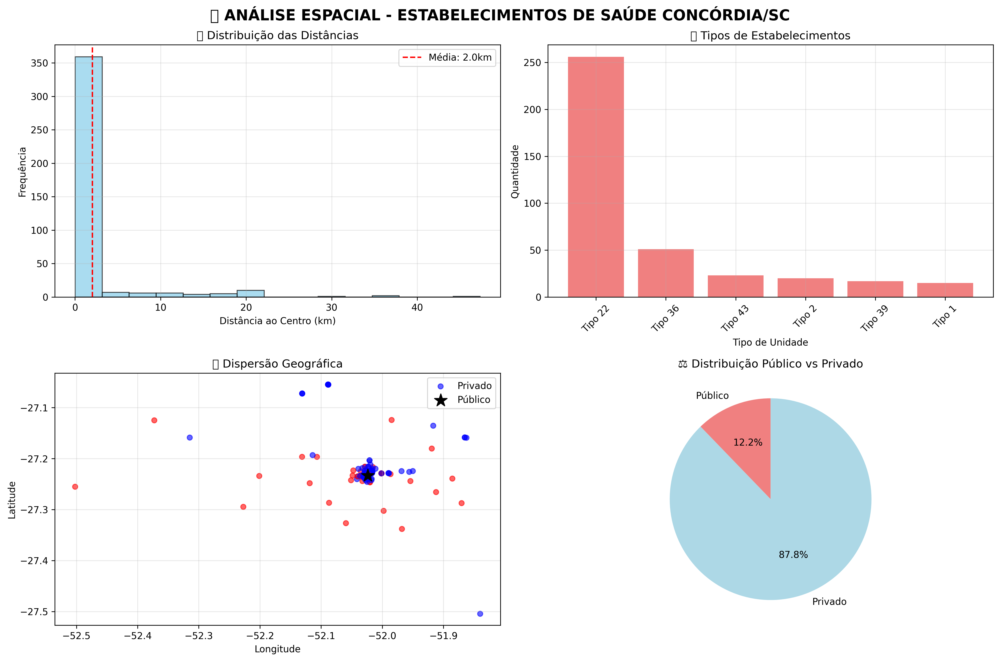

Dashboard Avançado - Saúde Pública Concórdia/SC Outubro 2025
Autor: Caetano Ronan — Instituição: UFSC
Fonte dos dados: CNES/DataSUS
Município: Concórdia/SC — Código IBGE: 420430
Estabelecimentos mapeados: 418 (401 com coordenadas válidas)
Resumo Executivo
- 95,9% de cobertura georreferenciada
- 98 unidades públicas mapeadas (23,4% do total)
- 79,6% dos postos públicos a menos de 5km do centro urbano
- 3,97 km distância média dos estabelecimentos ao centro
- 5 mapas HTML interativos gerados
Visualização do Dashboard

Metodologia
- Processamento dos dados via pandas e GeoPandas
- Mapas interativos com Folium e TreeLayerControl
- Paletas ColorBrewer para visualização temática
- Filtro espacial rigoroso por limites municipais
- Popups detalhados com endereço, bairro e distância
Principais Insights
- Distribuição Equilibrada: maioria dos estabelecimentos próximos ao centro
- Acessibilidade Pública: alta concentração de postos públicos em áreas urbanas
- Diversidade de Serviços: ampla variedade de tipos de unidades
- Cobertura Territorial: presença em todos os quadrantes da cidade
Conclusões
- Rede pública bem distribuída, mas com oportunidades de expansão em áreas rurais
- Recomendações para fortalecer transporte sanitário e telemedicina
- Mapas e relatórios facilitam o planejamento territorial e a tomada de decisão